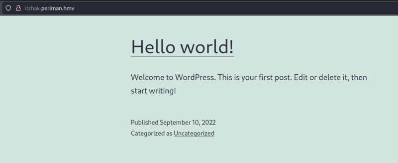
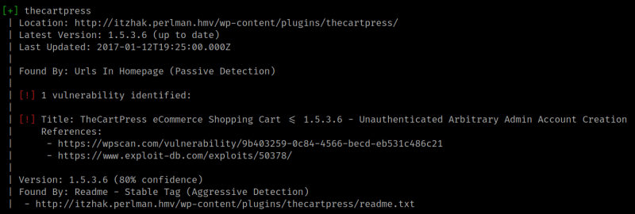

4.4 Wordpress
1. Visit http://itzhak.perlman.hmv/.

It's a Wordpress site.
2. Run “wpscan” over the site.
$ wpscan --url http://itzhak.perlman.hmv/ -e vt,vp --api-token
Output:

There's a vulnerability “TheCartPress eCommerce Shopping Cart <= 1.5.3.6 - Unauthenticated Arbitrary Admin Account Creation”